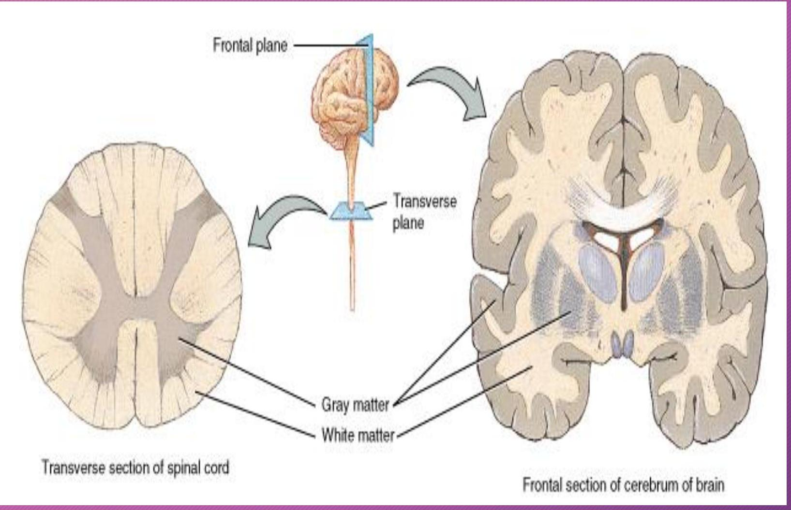
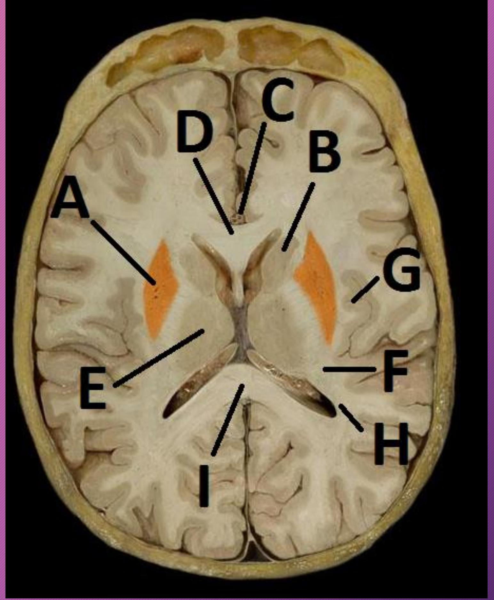
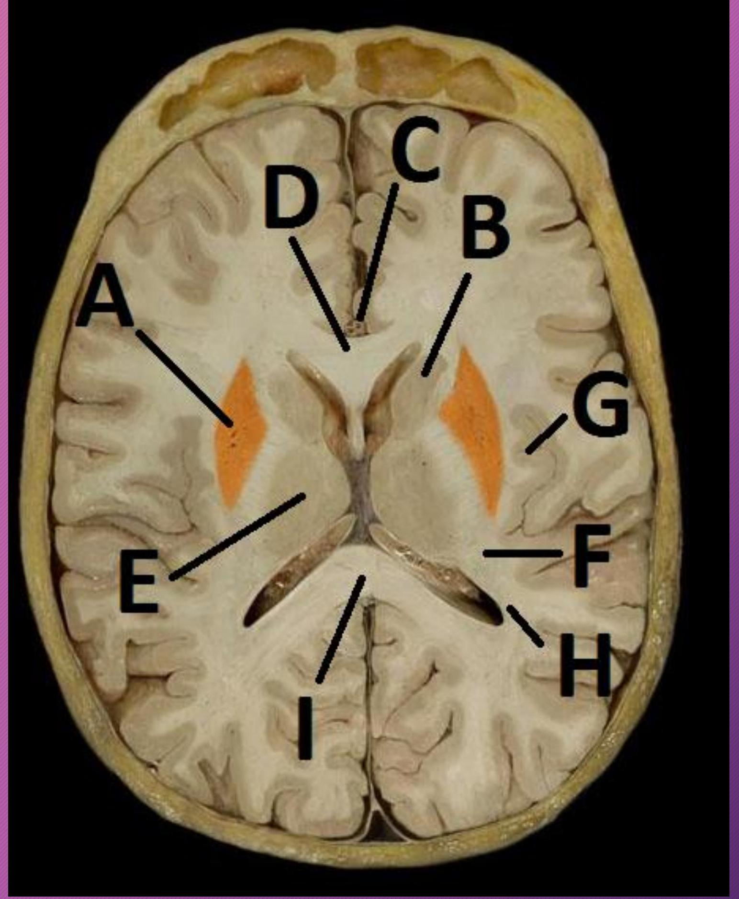

INTRODUCTION TO NEUROANATOMY
OBJECTIVES
- State the role of the nervous system
- Outline the divisions and subdivisions of the nervous system
- Functional categories of peripheral nerves
- Review of functional domains of a neuron
- Familiarize with terms used to describe cell bodies and axons
- Basic parts of the brain and spinal cord
THE ROLE OF THE NERVOUS SYSTEM?
Coordination and Integration
DIVISIONS OF THE NERVOUS SYSTEM
- Central Nervous System
- Peripheral Nervous System
CENTRAL NERVOUS SYSTEM?

PERIPHERAL NERVOUS SYSTEM
Anatomically - origin
- Cranial (12 Pairs)
- Spinal Nerves (31 Pairs)
Functional classification
Impulse direction
- Afferent (Sensory)
- Efferent (Motor)
EFFERENT (MOTOR) SYSTEM
- Somatic Nervous System
- Autonomic Nervous System

Central Nervous System
Efferent nerve system (Descending/Motor Pathways)
Afferent nerve system (Ascending/Sensory Pathways)
Sensory Receptors
Effectors
Functional modalities of peripheral nerves
- General/Special
- Somatic/Visceral
- Afferent/Efferent
Functional modalities of peripheral nerves
- GSE
- GSA
- GVE
- GVA
- SVE
- SVA
- SSA
COMPONENTS OF NERVOUS TISSUE
Functional Cells
- Neurons or Nerve Cells
Supporting Cells
- Various Types of Glial Cells
FUNCTIONAL DOMAINS:
- Receptive
- Integration
- Transmission

STRUCTURAL CLASSIFICATION

Terms used to describe cell bodies

- Grey Matter
- Cortex
- Nucleus
- Ganglion
Terms used to describe cell bodies

- Grey Matter

- Nucleus
- Ganglion
Terms used to describe axons:

- Fibers
- Tract
- Fasciculus
- Funiculus
- Lemniscus
- Peduncle
Fiber types of the cerebral cortex


DIENCEPHALON

(c) Midsagittal view


central sulcus
 



Cranial nerve anatomy
- Origin/Central connection (Nuclei)
- Functional components
- Brainstem attachment/exit
- Course (intracranial; foramen; extracranial)
- Branches and distribution
- Clinical anatomy (sites and effects of injury)

Spinal cord

VENTRICULAR SYSTEM

THANK YOU
THANK YOU